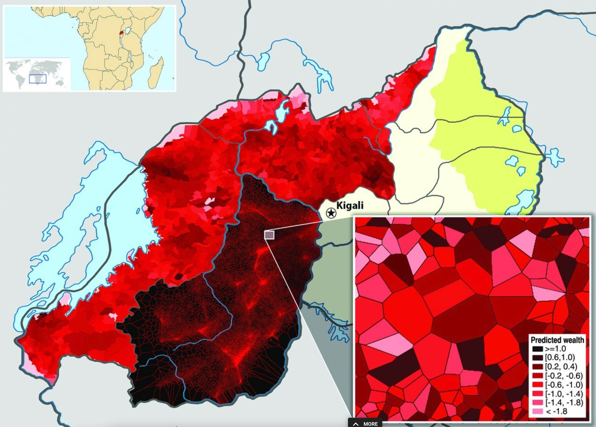
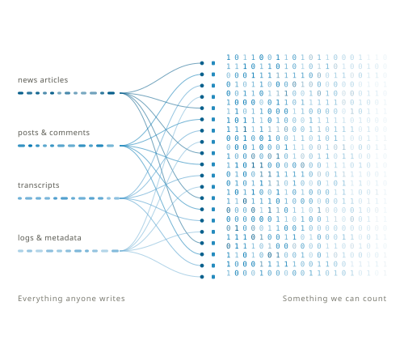
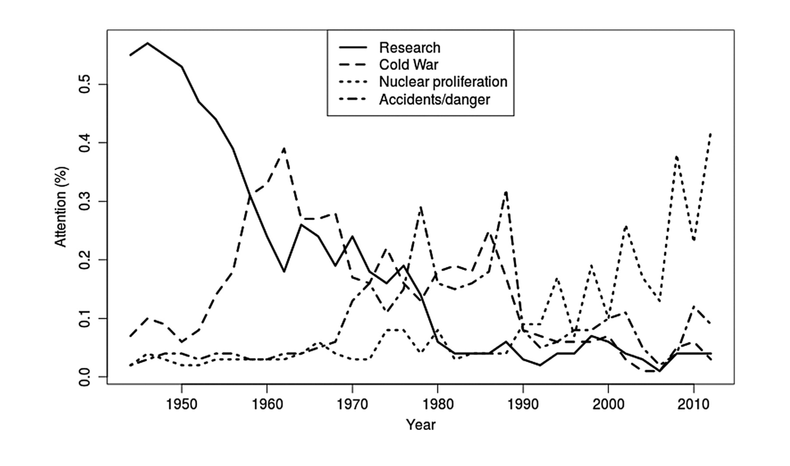
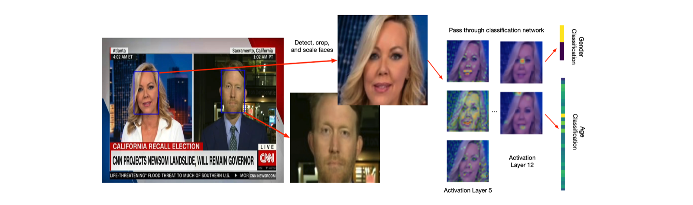
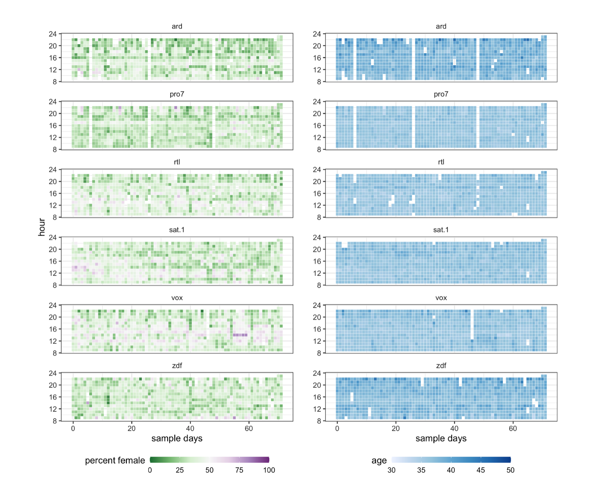
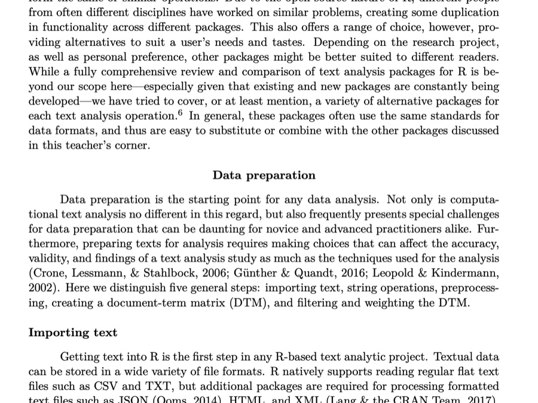
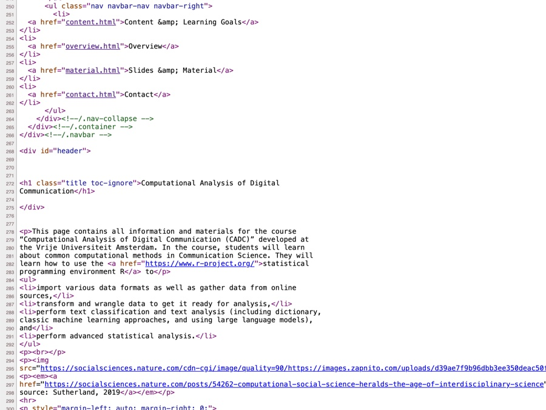

Computational Analysis of Digital Communication · Vrije Universiteit Amsterdam
What did they say?
The world went digital in about twenty years
Hilbert, M., & López, P. (2011). The world’s technological capacity to store, communicate, and compute information. Science, 332(6025), 60–65. https://doi.org/10.1126/science.1200970
International Data Corporation. (2024). Global DataSphere and StorageSphere forecasts. IDC. — post-2007 storage.
Epoch AI. (2026). Global AI computing capacity is doubling every 7 months. https://epoch.ai/data-insights/ai-chip-production — AI panel.
Much of what we know about human behavior
... is based on what people tell us
Self-report measures in surveys
Responses in experimental research
Accounts in qualitative interviews
Useful for measuring motivations, attitudes, or feelings, but such measures can be biased:
reported and actual behaviour diverge systematically.
Communication that was never explicitly elicited for
research, but is stored and available at scale. How can we use it?
Parry, D. A., Davidson, B. I., Sewall, C. J. R., Fisher, J. T., Mieczkowski, H., & Quintana, D. S. (2021). A systematic review and meta-analysis of discrepancies between logged and self-reported digital media use. Nature Human Behaviour, 5(11), 1535–1547. https://doi.org/10.1038/s41562-021-01117-5
Scharkow, M. (2016). The accuracy of self-reported internet use — A validation study using client log data. Communication Methods and Measures, 10(1), 13–27. https://doi.org/10.1080/19312458.2015.1118446
An ordinary question, too many articles
How did Dutch news cover the housing crisis between 2015 and 2025?
Did the coverage get more negative over the decade?
Did the framing shift from economics to fairness?
Whose voices were quoted: politicians, developers, tenants?
Nothing computational about the question itself: this is the content analysis communication research has been doing since the 1950s
To answer it you would read every article mentioning woningmarkt in four national outlets, 2015 to 2025
Articles to code100,000
Minutes to read and code one× 4
Hours≈ 6,700
Working days≈ 830
3 years
one coder, full time, no holidays, reading each article exactly once
The two big questions this course will answer
How can we analyse all of this text — automatically?
How can we make sure that the analysis is valid?
Objectives and learning goals
After completion of the course, you will…
identify the data-analytic problem in a communication question, state it precisely enough for a machine, and judge whether a computational method can answer it
describe the text-classification pipeline end to end and name where each decision can go wrong
explain what each method costs and assumes, from word counts to large language models, and when the cheap one is right
treat measurement as a research question and decide when a number is not good enough to publish
run a small text-analysis study in a group, from research question to presentation
Only the third names methods. The others outlast whatever tool is current when you graduate.
Skills and methods
With regard to the specific methods taught in R, you will be able to…
import and wrangle text into a tidy table, and turn it into tokens, counts and embeddings
apply dictionaries, supervised classifiers, word embeddings and LLMs to the same texts
build a gold standard, compute coder agreement (Cohen’s κ, Krippendorff’s α), read a confusion matrix, and report precision, recall and F1
obtain data for a project of your own from APIs, archives and existing corpora
make an analysis reproducible from a clean start, document its decisions, and disclose what an AI tool did
Each of these is practised in the labs, the homework or the group project.
Who am I?
Research focus — privacy and self-disclosure online, social influence and behavioural contagion, digital literacy, social media and well-being
Methods — simulation and experimental designs, scale development and validation, Bayesian statistics, computational methods and machine learning
Dr. Noon Abdulqadir: Research Associate, Communication Science
Labs: two of the six groups, in English
Gianni Quaedvlieg, MSc: Lecturer, Communication Science
Labs: two of the six groups, in Dutch
I teach the other two groups, in Dutch. Your group, and with it your teacher and the lab language, is assigned on Canvas.
This lecture
I
Computational communication science
What it is, why now, and what it looks like in published research
II
Text as data
What a text is to a computer, and how it becomes numbers
III
The text classification pipeline
Four steps this course keeps returning to, and how to state a problem a machine could attempt
IV
A short history
From counting words to language models — one generation per week
V
Ethics
What changes when the data were never given to you
VI
How this course works
Rhythm, assessment, and what happens this week
I · Computational communication science
An example: a surprising source of information
2009, Rwanda: a survey of 1,000 customers of the largest mobile provider (demographics, assets, wealth)
The researchers also had the call records of 1.5 million subscribers
A model trained on the 1,000 predicts wealth from calling behaviour for everyone else
Location comes free: the towers that carried the calls

Predicted wealth by district, and by cell tower in the inset. Blumenstock, Cadamuro & On (2015), Science.
Blumenstock, J., Cadamuro, G., & On, R. (2015). Predicting poverty and wealth from mobile phone metadata. Science, 350(6264), 1073–1076. https://doi.org/10.1126/science.aac4420
Computational social science
Social science that uses algorithmic tools and large, unstructured data to study human and social behaviour
Complements surveys, experiments and interviews rather than replacing them; the question comes first
The usual ingredients
Digital traces: posts, logs, transactions, call records
Automated text, image, or video analysis
Machine learning for classification and prediction
Simulation of social processes
Different data, the same questions.
Lazer, D., Pentland, A., Adamic, L., Aral, S., Barabási, A.-L., Brewer, D., … Van Alstyne, M. (2009). Computational social science. Science, 323(5915), 721–723. https://doi.org/10.1126/science.1167742
Why now?
Big data: social media, digital archives, digitised newspapers, logs of almost everything
Constant records: traces of people and organisations accumulate as a by-product of ordinary life
More compute: powerful, cheap, and available without owning a computer
Sophisticated tools: text classification, topic models, word embeddings, and now large language models, much of it open source
The first figure of this lecture showed three of these developments.

Big data · three things that help
Characteristic
In one line
1 · Big
Rare events, heterogeneity, small differences become studyable
2 · Always on
Continuous collection: unexpected events, real time
3 · Non-reactive
Being measured does not change the behaviour
None of the three guarantees that the data are good.
Salganik, M. J. (2018). Bit by bit: Social research in the digital age. Princeton University Press. Chapter 2.3.
Big data · seven things that get in the way
Characteristic
In one line
4 · Incomplete
Made for another purpose; your variable is missing
5 · Inaccessible
Held by companies and governments
6 · Non-representative
Users of a platform are not a population
7 · Drifting
The system changes under you
8 · Algorithmically confounded
Behaviour is shaped by the platform’s engineering
9 · Dirty
Spam, bots, duplicates, junk
10 · Sensitive
Some of it should never have been collected
Salganik, M. J. (2018). Bit by bit: Social research in the digital age. Princeton University Press. Chapter 2.3.
What computational methods buy, and what they cost
Opportunities
Actual behaviour instead of reports of it
People in their own context, not a lab
Very large N, and therefore statistical power
Patterns that were not observable before
Pitfalls
The techniques are demanding
The data are often proprietary and cannot be shared
Samples are biased in ways that are hard to see
Little metadata; unknown provenance
Models we no longer understand
Computational communication science
“The emerging subfield that investigates the use of computational algorithms to gather and analyze big and often semi- or unstructured data sets to develop and test communication science theories.”
van Atteveldt & Peng (2018)
Large and complex data sets
Consisting of digital traces and other naturally occurring data
Requiring algorithmic solutions to analyse
Used to develop and test communication theory
Van Atteveldt, W., & Peng, T.-Q. (2018). When communication meets computation: Opportunities, challenges, and pitfalls in computational communication science. Communication Methods and Measures, 12(2–3), 81–92. https://doi.org/10.1080/19312458.2018.1458084
Where it shows up
Political communication: polarisation, hate speech, campaign messaging, parliamentary debate
Journalism: coverage across decades, framing, gender representation
Social media use: logged rather than reported use; the spread of information and emotion
Health communication: what health information circulates, and where
Three studies, three kinds of data: news text, television, and (for the ethics part) a social network.
Example 1 · Seventy years of nuclear news
51,528 New York Times stories on nuclear technology, 1945–2014
Far too many for human coding
A topic model finds recurring clusters of words and tracks them over time
Research → Cold War → accidents → proliferation

Attention to four topics over time. Jacobi, van Atteveldt & Welbers (2016).
Jacobi, C., van Atteveldt, W., & Welbers, K. (2016). Quantitative analysis of large amounts of journalistic texts using topic modelling. Digital Journalism, 4(1), 89–106. https://doi.org/10.1080/21670811.2015.1093271
Example 2 · Who is on German television?
Six channels, 72 sample days, every frame between 08:00 and 24:00
A face detector finds and crops every face; a second network estimates gender and age
16 million faces: nobody can watch this much television, but a validated classifier can
The classifier is checked against hand-coded faces first; without that step the numbers mean nothing

Detect, crop, classify, validate: the four steps for text, with pixels as input.
Jürgens, P., Meltzer, C. E., & Scharkow, M. (2022). Age and gender representation on German TV: A longitudinal computational analysis. Computational Communication Research, 4(1), 173–207.
Example 2 · And the answer is the same everywhere
6.3 million of the 16 million faces were female, a proportion of .39 (95% CI .37 to .42)
The imbalance holds across news, sport and advertising, hour by hour and day by day
It is also stable over time, so the pattern is structural
Women on screen are also, on average, younger than men

Each tile is one hour of one day. Left: share of female faces. Right: estimated age.
Jürgens, P., Meltzer, C. E., & Scharkow, M. (2022). Age and gender representation on German TV: A longitudinal computational analysis. Computational Communication Research, 4(1), 173–207.
II · Text as data
A new kind of data
A lot of communication is encoded in texts
But text does not look like data we can easily analyse
Survey data
# A tibble: 5 × 4
id condition sns_use well_being
<int> <chr> <dbl> <dbl>
1 1 A 2.1 3.4
2 2 B 2.5 2.4
3 3 A 3.3 3.3
4 4 B 4.6 1.9
5 5 A 1.8 4.4
Text data
# A tibble: 5 × 1
text
<chr>
1 North Korea launched a ballistic missile into the Sea of Japan, South Korea's…
2 Tributes poured in for Colin Powell after the announcement of his death at 84.
3 An Indian couple arrived for their wedding by sailing through flooded streets…
4 Billionaire Peter Thiel is facing opposition over his plans to build a lodge …
5 Unique events that led to civilisation mean its demise could end meaning in t…
Most communication is encoded in text, and text does not look like data we know how to analyse.
What is a text?
Hieroglyphs carved into a temple wall

A printed journal article

The HTML behind a web page
All three are symbols in a sequence, meaningless on their own
Meaning arrives only when someone interprets them, in context
Automated text analysis tries to bridge that gap
Krippendorff, K. (2018). Content analysis: An introduction to its methodology (4th ed.). SAGE.
library(tidytext)texts |>unnest_tokens(word, text) |># one row per tokencount(doc, word) # one row per document and word
Three tiny texts, so every number can be checked by eye
unnest_tokens splits, lowercases and drops punctuation in one call; count does the arithmetic
One row per document and word is the tidy shape: every later step in this course is a join or a summary on it
Output
# A tibble: 17 × 3
doc word n
<chr> <chr> <int>
1 A good 1
2 A is 1
3 A law 1
4 A new 1
5 A news 1
6 A the 1
7 B good 1
8 B is 1
9 B law 1
# ℹ 8 more rows
The document–term matrix
texts |>unnest_tokens(word, text) |>count(doc, word) |>pivot_wider(names_from = word,values_from = n,values_fill =0) # a word absent from a text counts 0
The same counts, turned on their side: one row per document, one column per term, a count in every cell
Compare it with the survey table four slides ago: rows are cases, columns are variables. Text has become ordinary data
Most cells are zero, and with real corpora almost all of them are. The matrix is sparse
The document–term matrix, or DTM: the representation weeks 2 and 3 run on.
Output
# A tibble: 3 × 11
doc the new law is good news not a disaster this
<chr> <int> <int> <int> <int> <int> <int> <int> <int> <int> <int>
1 A 1 1 1 1 1 1 0 0 0 0
2 B 1 1 1 1 1 1 1 0 0 0
3 C 0 0 1 0 0 0 0 1 1 1
What the matrix throws away
Text
law
good
news
not
disaster
A · The new law is good news.
1
1
1
0
0
B · The new law is not good news.
1
1
1
1
0
C · A disaster, this law.
1
0
0
0
1
Five of the ten columns from the previous slide; texts A and B say opposite things and differ in one cell
The matrix keeps which words occur and how often; it drops the order they came in. This is the bag-of-words assumption
Cheap and surprisingly effective for many questions; blind to negation, irony, and anything that lives between words
Treating not as a negative word does not repair it: each column is counted on its own, so “not a disaster” falls just as far as “not good”
Every method in weeks 2 and 3 works on this matrix and inherits this blindness. Week 3 shows the cheap fix, week 4 the expensive one.
Where the numbers come from
Level of language
It organises
This course uses it in
Morphology
how words are formed
tokens, stems, n-grams (weeks 1 to 3)
Syntax
how sentences are built
word order, mostly thrown away until week 3
Semantics
what words and sentences mean
word embeddings (week 3)
Pragmatics
how language is used in context
language models (week 4)
Every method in this course is a decision about which of these levels to keep.
Hvitfeldt, E., & Silge, J. (2021). Supervised machine learning for text analysis in R. CRC Press. Chapter 1.
Content analysis, by hand
Choose the texts
Define the units and the categories
Write a codebook: rules another coder could follow
Code, which is where the time goes
Check agreement between coders, revise the rules, code again
Analyse frequencies, relationships, change over time
Steps 1, 2, 3 and 5 remain when a machine does step 4, and that is the pipeline.
III · The text classification pipeline
The pipeline
01 · Obtain
Public data sets: parliamentary records, news corpora, research archives; ideal when they exist
Scraping: websites and archives you collect yourself; trivial or very hard depending on the site, and always a legal question
Third parties: APIs, commercial archives, data donations; custom formats, rate limits, terms of use that change
Obtaining text is rarely the interesting part and often the slowest. Plan for it.
02 · Represent
Create features: break text into units (words, n-grams, sentences)
Build the data: the document–term matrix from Part II for counting and classic learning; dense vectors for neural models
Every item on this list is a decision, and every decision changes the measurement. Modern models leave you fewer, but some remain.
03 · Classify
Rule-based
Unsupervised
Supervised
Pre-trained models
Logic
“if word X occurs, the text means Y”
“these words cluster; I decide what the cluster means”
“texts like these were labelled Y, so this one is probably Y too”
“given everything I have read, this text is Y”
Meaning comes from
the researcher, in advance
the researcher, afterwards
human-coded training data
the model’s training corpus
Example
a sentiment dictionary
topic models
Naive Bayes, SVM, neural nets
GPT, Llama, Claude
In this course
week 2
—
week 3
week 4
04 · Validate
Every classifier is a black box to some degree, dictionaries included, and manual coding too
The machine does not understand the text; it predicts a label from features, and it is wrong some of the time
So the analysis must be shown to be valid: compare its labels with a known good
The reference is usually a gold standard: a subset coded by trained humans, with agreement checked
A number becomes a measurement only once it has been validated.
The pipeline runs on problems, not on questions
A computational problem, stated properly
Input: what exactly goes in? One article, one sentence, one post? Whose?
Output: what exactly comes out? A label, a score, a number per month?
Success criterion: what would count as good enough, decided before you run anything
Failure check: how would you find out that you were wrong?
Most labs include a sketch like this, on paper, before you touch a tool.
The same question, framed twice
Not yet a problem
“Is the housing coverage negative?”
Negative to whom, measured how, compared with what?
A problem you can run
Input: one article
Output: negative / neutral / positive
Criterion: agrees with a trained human coder
Check: on 100 articles nobody used to build it
The right-hand column is also precise enough for others to refute.
IV · A short history of text analysis
Timeline of natural language processing
Same task, four generations
One measurement task runs through weeks 1 to 4
One hand-coded gold standard, built by you in week 2
Four methods scored against it: counting, a dictionary, a trained classifier, a language model
So by week 4 you can say which method is better, for this task, on this data, rather than which is newer.
V · Ethics
A controversial study
2012: Facebook alters the news feeds of 689,003 users for one week: fewer positive posts for some, fewer negative for others
Emotional words in the users’ own posts shift in the same direction; the effect is real and tiny
The users were not asked, informed or debriefed
Published in PNAS in 2014; the reaction was immediate
The terms of service made it legal; whether it was right is a separate question.
Kramer, A. D. I., Guillory, J. E., & Hancock, J. T. (2014). Experimental evidence of massive-scale emotional contagion through social networks. PNAS, 111(24), 8788–8790. https://doi.org/10.1073/pnas.1320040111
Ethical challenges
Privacy: personal data, data breaches, and the question of what you send to a company’s model
Bias: models inherit the biases of their training data, and validation is the only way to see it
Transparency: complex models are hard to explain, which makes them hard to hold to account
Manipulation: the same tools shape opinion and behaviour, with or without consent
Cost: energy for training and running models, and ownership of models and data
Van Atteveldt, W., & Peng, T.-Q. (2018). When communication meets computation. Communication Methods and Measures, 12(2–3), 81–92. https://doi.org/10.1080/19312458.2018.1458084
Four principles
Respect for persons: treat people as autonomous; honour their wishes
Beneficence: understand and improve the risk–benefit profile of the study
Justice: risks and benefits should fall on the same people
Respect for law and public interest: privacy, copyright, access rights
The first three come from the Belmont Report (1978), the fourth from the Menlo Report (2012). Salganik applies all four to digital research.
Dittrich, D., & Kenneally, E. (2012). The Menlo Report: Ethical principles guiding information and communication technology research. U.S. Department of Homeland Security.
Salganik, M. J. (2018). Bit by bit: Social research in the digital age. Princeton University Press. Chapter 6.
Principles for computational communication research
Principle
In practice
1 · Privacy and data security
Consent where you can; know where your data go
2 · Fairness
Look for bias in data and models; validate
3 · Transparency
Prefer interpretable models; share complex ones
4 · Care with experiments
Consent and debriefing, or assess the harm
5 · Environmental impact
Test small first; most tasks need no giant model
6 · Cross-cultural sensitivity
Models do not cross languages for free
7 · Engagement
Involve the communities your research touches
Using AI in this course
Instrument: the model produces your measurements; disclosed and validated
Assistant: it helps you write code or prose that you check yourself; disclosed
Thinking partner: it stress-tests ideas that are already yours; disclosed
Surrogate: it does the thinking you were supposed to do; not allowed
The rule follows the category of use, whatever the tool. Anything you send to a hosted model leaves your machine.
VI · How this course works
The team
Assoc Prof. Dr. Philipp K. Masur: coordinator, lecturer and lab teacher (labs in Dutch); contact through Canvas
Lab teachers: Dr. Noon Abdulqadir (labs in English) and Gianni Quaedvlieg, MSc (labs in Dutch); six groups, two each, assigned on Canvas
Setup help: the “Before the first lab” page on the course website, for installs, packages and error messages
Not everything will work the first time. Tiny mistakes produce errors; that happens to everyone who writes code.
The weekly rhythm
Monday · lecture: the problem, then the method; the history gets told here
Tuesday and Thursday · labs: your hands on the keyboard, in six groups; mandatory
Sunday · homework: started in Thursday’s lab, finished at home; one a week, weeks 1 to 4
Slides and labs on the course website; communication and submission via Canvas
In the labs you predict what a chunk will output before you run it, and find the planted bug. Each lab opens with a short check-in: not graded, but six of eight are required.
Assessment
Component
Weight
What it is
Exam
40%
Week 5, in the room, without a model to ask. Reading output and code, judging whether a measurement can be believed
Homework
30%
Four assignments, one a week, each started in Lab B: your code, its output, short reflections on your own results, and an AI disclosure. All four required
Group project
30%
Weeks 6 to 8, a study of your own in a group, ending in a mini conference
The exam and the check-ins are the unaided lane. Homework and project permit AI use, by category, with a proper disclosure.
This week
Tuesday · Lab A: tidy wrangling (filter, select, mutate, group, summarise) on European survey data
Thursday · Lab B: tokens, counts and a document–term matrix, then State of the Union speeches
Sunday · homework 1: New Year’s resolution tweets (clean, count, compare), started in Lab B
Before Thursday · Playground: the tokeniser sandbox, two minutes
Reading: van Atteveldt & Peng (2018); R for Computational Social Science, ch. 2–5
Before Tuesday: work through Before the first lab on the course website. The labs start on your own laptop.
Example exam question · multiple choice
Why is the emotional contagion study by Kramer et al. (2014) ethically problematic?
A. Participants did not know they were part of a study (no informed consent)
B. It deliberately manipulated people’s emotions
C. Both A and B
D. It was not ethically problematic
C. The harder follow-up: would B have been acceptable with A resolved?
Example exam question · open
Name and explain two characteristics of big data that make it difficult to use for research. (4 points: 2 for naming, 2 for explaining)
Incomplete: created for another purpose, so the variable you need is usually not there. A browser log has every URL and nothing about why.
Algorithmically confounded: behaviour on a platform is shaped by the platform’s own ranking, so what you observe is partly the system’s doing.
Questions?
If anything is unclear, ask now, or on Tuesday, with a keyboard in front of you.